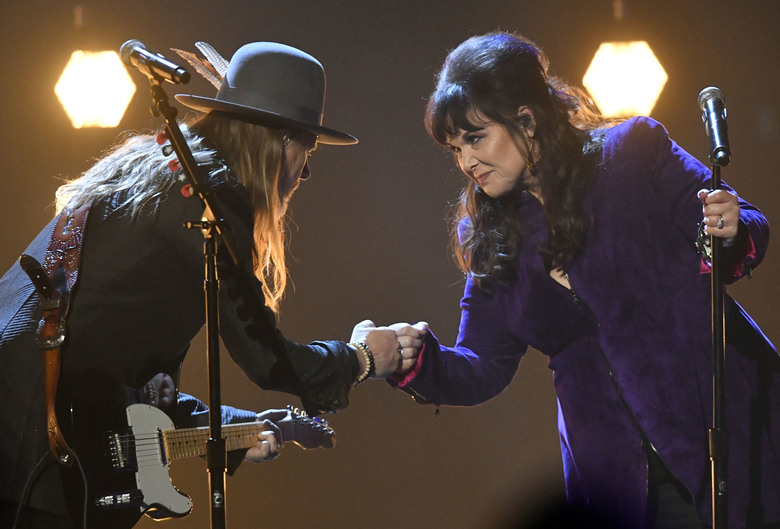

Heart’s Ann Wilson and Alice in Chains’ Jerry Cantrell honor Chris Cornell at Rock & Roll Hall of Fame ceremony
Originally published April 15, 2018 at 10:16 am
Jerry Cantrell, left, and Ann Wilson bump fists after performing during the Rock and Roll Hall of Fame induction ceremony, Saturday, April 14, 2018, in Cleveland. (AP Photo/David Richard)
By Michael Rietmulder
Seattle Times music writer
Although this year’s class of Rock & Roll Hall of Fame’s inductees did not include any Jet City acts, there was a touching Seattle moment during last night’s induction ceremony at Cleveland’s Public Auditorium.
Two local legends, Alice in Chains’ Jerry Cantrell and Ann Wilson of Heart, teamed up to honor the late Chris Cornell with a stripped-down performance of “Black Hole Sun.” The heartfelt tribute came during a night unofficially headlined by the reunion of inductees Bon Jovi’s heyday lineup. Wilson’s forceful take on the spectacularly gloomy tune was accompanied only by the Alice in Chains guitarist’s beautifully doleful strumming, the low-key setup lending added poignancy. It wasn’t Wilson’s first time saluting the late Soundgarden frontman by covering what is perhaps his most recognizable song, having performed the track on “Jimmy Kimmel Live!” after his death last year.
When Heart was inducted into the Cleveland rock shrine back in 2013, Cornell gave an induction speech recalling how in his early days seeing one of the Wilson sisters strolling out of a local studio inspired him to keep pushing at his music career. Cantrell also performed with Heart that night. Though both bands have been eligible for several years, neither Alice in Chains — who play KISW’s Pain in the Grass festival this summer — nor Soundgarden have made the cut.
While fan video of the performance has surfaced online, we’ll likely have to wait until HBO broadcasts the ceremony on May 5 for a higher quality version. Besides Bon Jovi, this year’s class included legendary singer and civil rights activist Nina Simone, the Cars, Dire Straits, the Moody Blues and Sister Rosetta Tharpe.